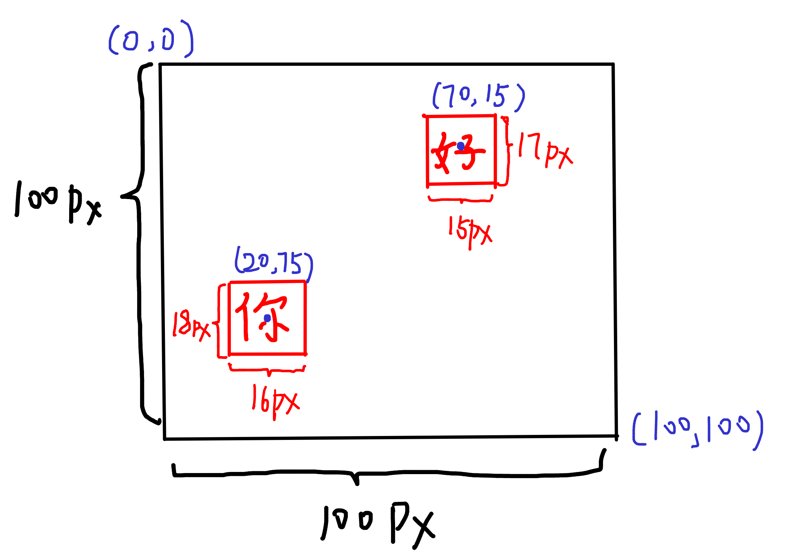
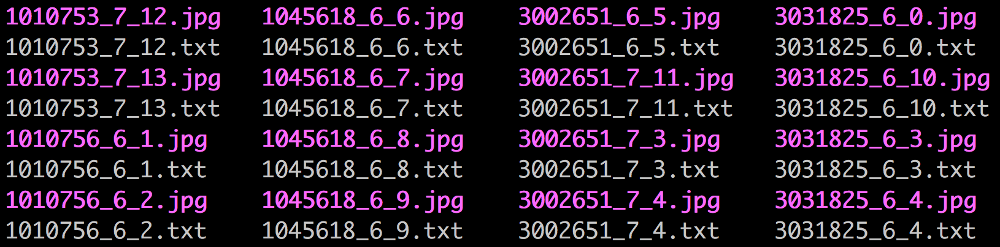

破解点击选择验证码
训练命令
sh run.sh yolo_train- 训练定位器sh run.sh yolo_vaild- 批量前向定位器，保存结果为记事本。sh run.sh classifier_train- 训练分类器sh run.sh classifier_valid- 批量前向分类器
目录结构
.
├── Makefile
├── README.md
├── cfg
│ ├── chinese.data 分类器训练配置文件
│ ├── chinese_character.cfg 分类器网络配置文件
│ ├── yolo-origin.cfg 定位器网络配置文件
│ ├── yolo-origin.data 定位器训练配置文件
│ ├── yolo-valid.cfg 定位器批量前向网络配置文件
│ └── yolo-valid.data 定位器批量前向配置文件
├── darknet darknet二进制
├── data
│ ├── chinese_label.names 分类器标签名称
│ └── yolo.names 定位器标签名称
├── examples
├── include
├── model
│ └── character.dict 分类器编码，需要替换
├── python
│ ├── __init__.py
│ ├── darknet.py darknet python接口
│ ├── sampleImage.py
│ └── server.py 部署模型接口
├── results yolo前向结果保存位置
│ └── comp4_det_test_character.txt
├── run.sh 训练脚本
├── scripts voc数据集转换脚本
└── src darknet源代码
定位器训练
文件准备
准备如下两个文件
cfg
├── yolo-origin.cfg
└── yolo-origin.data
yolo-origin.cfg
[convolutional]
size=1
stride=1
pad=1
filters=30
activation=linear
[region]
anchors = 1.3221, 1.73145, 3.19275, 4.00944, 5.05587, 8.09892, 9.47112, 4.84053, 11.2364, 10.0071
bias_match=1
classes=1
coords=4
num=5
softmax=1
jitter=.3
rescore=1
object_scale=5
noobject_scale=1
class_scale=1
coord_scale=1
absolute=1
thresh = .6
random=1
filter为30，其计算公式为num代表每个框最多预测多少物体。classes代表一共有多少个类，这里为1。coord代表回归的四个位置，分别为<x> <y> <width> <height>代表物体中心点相对位置以及物体相对大小。如你的标签为0 0.2 0.75 0. 16 0.18，好的标签为0 0.7 0.15 0. 15 0. 17。
yolo-origin.data
classes= 1
train = /some_path/train.txt
valid = /some_path/train.txt
names = darknet/data/yolo.names
backup = darknet/debug
classes代表一共有多少train代表存放训练数据路径位置文件valid代表存档前向测试数据路径文件
products/trainval/0000172_6_0.jpg
products/trainval/0000172_6_1.jpg
products/trainval/0000172_6_2.jpg
label与图片在同一文件夹下
-
names前向时类别名称 (track, dog,bicycle)
-
backup训练后权重保存位置
训练
准备好文件后下载对应的权重，开始训练
wget https://pjreddie.com/media/files/darknet19_448.conv.23
sh run.sh yolo_train
分类器训练
准备文件
cfg
├── chinese_character.cfg
└── chinese.data
chinese_character.cfg
[convolutional]
batch_normalize=1
filters=1024
size=3
stride=1
pad=1
activation=leaky
[convolutional]
filters=3549
size=1
stride=1
pad=1
activation=leaky
[avgpool]
[softmax]
groups=1
[cost]
type=sse
filters最后一层卷基层代表汉字分类个数，这里为3549
Chinese.data
classes=3549
train = darknet/chinese_character_train/train.list
valid = chinese_character_train/train.list
labels = darknet/data/chinese_label.names
backup = darknet/model/classifier
top=100
classes代表分类个数train代表存放训练数据路径位置文件valid代表存档前向测试数据路径文件
products/trainval/0000172_abcdefg.jpg
products/trainval/0000173_abcdfge.jpg
products/trainval/0000174_bcabfge.jpg
names代表标签名称
abcdefg
abcdegf
abcdfeg
abcdfge
abcdgef
abcdgfe
abcedfg
abcedgf
darknet在通过文件名与names中的字符串做匹配，匹配到则认为该标签为匹配到的字串。如products/trainval/0000172_abcdefg.jpg，由于names中出现abcdefg，所以这张图的标签为abcdefg。所以图片的路径绝对不可以出现多个names中包含的字串，如果路径为some_path1/data2/3.jpg，names包含1,2,3，则这张图片会被认为匹配多个label从而报错。
top代表vaild时取前多少计算正确率。如top100代表前分类时概率最大的前100类中出现了正确的标签就认为正确。因为点击验证码存在先验，我们有候选字的范围，可以结合候选字进行破解。
训练
sh run.sh classifier_train